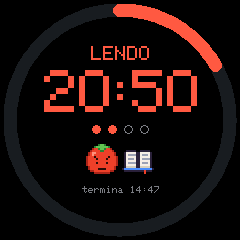
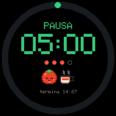
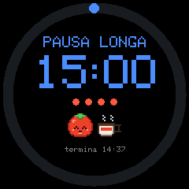
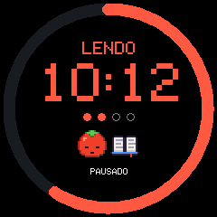
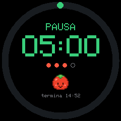
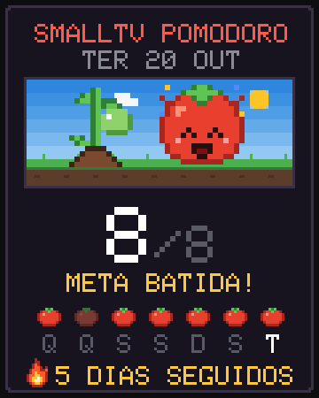

Como usar
Do primeiro Wi-Fi à recuperação por cabo, em passos curtos. Cada ajuste citado aqui está no painel do relógio, na aba indicada.
Do relógio de fábrica ao Pomodoro
Leva uns 10 minutos, sem cabo e sem abrir o relógio. Funciona só no SmallTV Ultra (ESP8266). Não grave no SmallTV Pro (ESP32) nem em outros modelos.
Instalar o firmware
Baixe o arquivo
Pegue o
.binmais recente na página de versões (ou no botão de download da página inicial). Use a versão estável.Abra a página do relógio de fábrica
No navegador, entre no endereço do relógio (o IP que aparece na tela dele) e abra Firmware Upgrade.
Envie o arquivo
Escolha o
.bin, envie e espere o relógio reiniciar sozinho. As telas do Pomodoro aparecem em seguida.
Deu ERROR[4]: Not Enough Space? O espaço de atualização de fábrica varia de um relógio para outro. Resolva em dois passos:
- Envie primeiro o carregador
smalltv-mod-loader.bin(giovi321/smalltv-mod v2.8.2) pelo mesmo Firmware Upgrade. A tela fica preta com o carregador, e isso é normal: o relógio está ligado, esperando o próximo passo. - Entre na rede aberta
SmallTV-Loadere envie o.bindo Pomodoro emhttp://192.168.4.1/update(pelo celular ou pelo computador). Não desligue durante o envio. Depois o relógio reinicia sozinho com a tela do Pomodoro.
Não ligue e desligue várias vezes para “tentar de novo”: 3 vezes seguidas abrem o modo de recuperação, que é seguro, mas confunde.
Fotos e GIFs do firmware de fábrica: a instalação formata a memória de arquivos, então as fotos do original não ficam. Os ajustes e o Wi-Fi salvo ficam. Envie as fotos de novo pelo painel depois.
Conectar o relógio ao Wi-Fi
Se o relógio já tinha o Wi-Fi de casa salvo pelo firmware de fábrica, ele entra sozinho e você pode pular para achar o painel. Se não entrou:
Escaneie o QR da tela
A tela mostra ETAPA 1/2 com um QR. Aponte a câmera do celular e confirme entrar na rede
SmallTV-Pomodoro. O QR já leva a senha temporária dessa rede.Sem câmera ou o QR não leu? Entre na rede
SmallTV-Pomodoropelo Wi-Fi do celular e digite a senha de 8 caracteres que está na própria tela.Abra o portal
Com o celular conectado, a tela muda para ETAPA 2/2. O portal costuma abrir sozinho. Se não abrir, escaneie o segundo QR ou abra
http://192.168.4.1/.Escolha o Wi-Fi de casa
Selecione a sua rede e digite a senha dela. Só funcionam redes de 2,4 GHz (o relógio não tem 5 GHz). O relógio reinicia e mostra o endereço do painel.


Telas geradas pelo simulador do projeto. O QR não leva a senha do seu Wi-Fi de casa: ela só é digitada no portal. Para trocar de rede depois: Ajustes → Resetar Wi-Fi.
Achar o painel
O painel é a página do relógio no seu navegador, onde ficam todos os ajustes. Ele abre em qualquer aparelho que esteja na mesma rede, com 4 abas: Relógio, Foco, Fotos, Ajustes.
Pelo nome
Digite http://smalltv.local/ (com o http://, senão alguns navegadores fazem uma busca) e salve nos favoritos. Funciona no Windows 10/11, macOS, iOS e Linux com Avahi.
Com um segundo relógio na rede, o nome dele é smalltv-2.local, depois -3… O smalltv-xxxx.local (4 dígitos do chip) sempre funciona.
Pelo IP (o mais seguro)
O relógio mostra o IP no rodapé da maioria dos mostradores. Abra http://IP/ e salve nos favoritos. É o caminho para celulares Android, que podem não achar nomes .local.
Para o IP não mudar, reserve-o no roteador: procure DHCP → Reserva de endereço (ou Static lease) e escolha o relógio pelo nome smalltv-xxxx ou pelo MAC.
O smalltv.local só abre às vezes e meu computador está no 5 GHz
Muitos roteadores não passam o multicast da rede de 2,4 GHz para a de 5 GHz. O relógio fica sempre no 2,4 GHz, então a resposta dele não chega ao computador (só uma cópia direta chega, e no Windows ela pode cair em outro programa, como o Chrome, em vez do sistema: por isso funciona só às vezes).
- Ponha o computador na rede de 2,4 GHz: aí funciona.
- Ou use o IP nos favoritos (acima).
- Alguns roteadores têm uma opção para isso: IGMP snooping, multicast enhancement ou mDNS/Bonjour forwarding.
Usando o relógio
Tudo se ajusta no painel e salva sozinho ao mudar.
Pomodoro: focar, pausar, bater a meta
Abra a aba Foco e escolha O que vou fazer no foco: ler, estudar, programar, tarefas ou desenhar. O relógio mostra o objeto da atividade ao lado do tomate.
Ajuste os Tempos (foco, pausa curta, pausa longa, pausa longa a cada quantos focos) e a Meta diária de focos. Ligue Iniciar a próxima fase sozinho se quiser que as fases emendem.
Toque em Iniciar/pausar (ou aperte a barra de espaço no computador). Pular fase avança, Zerar volta ao início. Ao acabar uma fase o tomate pula de alegria.





Histórico e conquistas: o relógio guarda um ano de focos por dia. Na aba Foco ficam a sequência de dias na meta, a Horta (cada quadrado é um dia; vermelho = meta batida) e 10 Conquistas. A plantinha ao lado do tomate cresce a cada dia seguido na meta, até o tomate dourado aos 7 dias.
Cartão de compartilhar: em Compartilhar meu dia o painel desenha um cartão em pixel art com seus focos e sua sequência. No celular, abre o menu de compartilhar.

Mostradores nativos e a galeria
Na aba Relógio, a seção Nativos lista os mostradores que já vêm no firmware: toque em um para usar. Ver no relógio (15 s) testa sem salvar.

Instalar um mostrador novo
Em Relógio → Mais mostradores, toque em Ver a galeria online e escolha um (a galeria tem as prévias).
Ou baixe o
.jsonna galeria do site e use Instalar de um arquivo no painel (escolha o.jsone, se tiver, o.pngda prévia).O mostrador fica guardado no relógio, sem gravar o firmware de novo. Alguns pedem uma versão mínima do firmware; o painel avisa.
Rodízio: em Trocar de mostrador escolha de quanto em quanto tempo ele muda (1 min a 1 h; Nunca desliga). Depois toque num mostrador e escolha Incluir no rodízio (2 ou mais).
Fotos e GIFs (álbum)
Na aba Fotos, toque em Enviar fotos ou GIFs. As fotos são recortadas para 240×240 no seu navegador antes de ir; os GIFs vão como estão (o ideal é 240×240).
Em Relógio → O que mostrar escolha Álbum de fotos ou Alternar relógio e álbum (e os segundos por item).
Na aba Fotos, Mostrar agora exibe uma imagem na hora e Apagar remove.
Se o relógio avisar que falta memória para um GIF, use um GIF menor (240×240, menos quadros). É o limite do chip: o decodificador precisa de cerca de 24 KB livres seguidos.
Clima e aviso de chuva
Em Ajustes → Clima, ligue Mostrar clima, digite a cidade e toque em Buscar cidade. O clima vem do Open-Meteo, sem cadastro nem chave.
Ao escolher a cidade, o fuso horário (com horário de verão) acompanha. Se o do relógio não bater, o painel oferece corrigir.
Ligue Avisar quando for chover: se a chuva deve começar na próxima hora, o relógio mostra “chuva 15 min” e o tomate abre o guarda-chuva. Use Temperatura em °F se preferir Fahrenheit.
Brilho: noturno, pelo sol e cor quente
- Brilho noturno (Ajustes → Brilho): o relógio escurece à noite, com Brilho à noite no valor que você escolher.
- Dá para usar horário fixo (Das / Até) ou Seguir o sol, do pôr ao nascer do sol da sua cidade. Para isso a cidade precisa estar escolhida em Clima; até lá vale o horário fixo.
- Cor quente à noite: a tela perde um pouco do azul junto com o brilho noturno, sem mudar a imagem. O valor 0 desliga, e Ver agora por 15 s mostra o efeito.
Tom verde dos LCDs
Os mostradores LCD retrô, Previsão LCD e os do mapa-múndi imitam o visor verde de um relógio de pulso. Com um deles em uso, o cartão Mostrador atual ganha a opção Tom verde nos mostradores LCD: marque para ligar o tom verde, desmarque para voltar às cores normais. Ele só vale nesses mostradores; as telas de QR sempre ficam em preto e branco.
Alexa e avisos de fim de fase
Em Ajustes, ligue Controlar pela Alexa. Com um Echo na mesma rede, diga “Alexa, descobrir dispositivos”: o relógio aparece como três lâmpadas (Pomodoro, Pausa e Pausa longa). Não precisa de conta nem de nuvem.
Pomodoro: “ligar” começa ou retoma o foco, “desligar” pausa e, de novo, encerra; “Pomodoro em 40%” foca 40 minutos. Pausa e Pausa longa: “ligar” começa a pausa, “desligar” volta ao foco.
Nas rotinas do app da Alexa dá para usar frases suas, como “Alexa, hora de focar”.
Para a Alexa falar quando uma fase terminar
Ative a skill Virtual Smart Home e crie um URL Routine Trigger em virtualsmarthome.xyz (Voice Monkey e IFTTT também servem).
No painel, cole o endereço em Avisar quando o foco terminar e/ou Avisar quando a pausa terminar e toque em Salvar avisos. Testar foco e Testar pausa conferem.
No app da Alexa, crie uma rotina que começa com esse gatilho e faz a Alexa dizer “Pomodoro concluído”.
Idioma
Em Ajustes → Idioma escolha português, inglês ou espanhol. O idioma vale para o painel e para a tela do relógio (datas, clima, Pomodoro, o mostrador Palavras).
Atualizar, guardar e consertar
Atualizações: estável × versões de teste
Quando há versão nova, o painel avisa e mostra o que mudou. Toque em Atualizar agora e espere o relógio reiniciar (não desligue). Também dá para ir em Ajustes → Atualizar firmware. Antes de trocar, o relógio confere o arquivo e recusa um que esteja incompleto ou errado; pela rede ele só aceita firmware assinado deste projeto.
Estável
O padrão. É o que o botão de download do site entrega e o que o painel oferece. Escolha esta se você só quer o relógio funcionando.
Versões de teste
Ligando Receber versões de teste (Ajustes), o painel passa a oferecer também as versões de teste, antes de todo mundo. Elas podem ter problemas. Faça o backup antes e só use se souber o modo de recuperação. Todas estão em Versões.
Backup e restauração
Em Ajustes, toque em Fazer backup. O painel salva no seu aparelho um arquivo
smalltv-backup-….jsoncom ajustes, histórico de focos, mostradores baixados, avisos, fotos e GIFs. Não leva senhas nem dados do Wi-Fi.Para voltar, toque em Restaurar backup e escolha o arquivo. Os ajustes e o histórico atuais são substituídos. Se algum mostrador não estiver na galeria, instale-o de novo pelo arquivo; fotos que não couberem ficam de fora e o painel avisa.
Senha do painel
Em Ajustes, Senha do painel e do /update: digite uma senha (até 23 caracteres) e Salvar senha. A partir daí o navegador pede o usuário admin e essa senha ao abrir o painel. Campo vazio = sem senha. Para trocar, informe também a senha atual. A Alexa continua funcionando sem senha, porque só consegue iniciar e parar o timer.
Esqueceu? Use o modo de recuperação.
Diagnóstico: o que cada linha significa
Fica no fim da aba Ajustes. Se o relógio reiniciar sozinho, o motivo aparece aqui.
| Ligado há | Há quanto tempo o relógio está ligado sem reiniciar. |
|---|---|
| Último reinício | Por que reiniciou: ligado na tomada, reiniciado pelo próprio relógio (atualização ou ajuste), travou (com o código do erro e o endereço) ou reiniciado por fora (por algo externo ao relógio). |
| Última troca de tela | Quanto tempo a última troca completa de tela levou, em milissegundos. |
| Maior parada do relógio | O maior tempo em que o relógio ficou sem responder, e o motivo (clima, aviso ou outro). Paradas longas e frequentes costumam vir de Wi-Fi ruim. |
| Último início | Quanto cada etapa do ligar demorou: tela, Wi-Fi (“rápido” se reconectou direto), hora e NTP. |
| Sinal do Wi-Fi | Em dBm: bom (−60 ou mais), médio (até −72), fraco (abaixo disso). Abaixo de −75 dBm costuma explicar clima e atualização falhando. |
| Memória livre | A memória do chip agora, a menor desde que ligou, o maior bloco contínuo e a fragmentação. Um bloco pequeno é o que faz um GIF não caber. |
| Última queda | Só aparece se houve uma queda: o número, o motivo, a versão e quanto tempo ele estava ligado. Limpar apaga o registro. |
Ainda em Ajustes, Ver o que ocupa espaço mostra a memória de arquivos (fotos e GIFs, mostradores baixados, painel, histórico) e deixa apagar o que não precisa. Ajuste anti-fantasma está nas perguntas frequentes.
Modo de recuperação
Se o relógio travar ou ficar reiniciando (por exemplo depois de uma atualização), ele abre uma rede própria, sem botão:
Desligue e ligue o relógio 3 vezes seguidas, deixando ligado menos de 30 segundos a cada vez.
Na terceira, a tela mostra MODO DE RECUPERAÇÃO com um QR. Entre na rede
SmallTV-Recuperacao(o QR leva a senha temporária; a senha também está na tela).Abra
http://192.168.4.1(o segundo QR faz isso). Não pede senha. Lá você pode enviar um firmware, voltar os ajustes ao padrão, esquecer o Wi-Fi ou baixar o histórico de focos.Reiniciar normalmente volta ao relógio.


A tela nem acende e a recuperação não abre?
Dá para regravar por cabo, num adaptador USB-TTL de 3,3 V, sem perder fotos nem ajustes (em relógios que já estão na memória 4M2M). Resumo: ligue GND, TXD0→RX, RXD0→TX e GPIO0→GND (só na hora de ligar); faça uma cópia com esptool read_flash 0x0 0x400000 e grave com esptool write_flash 0x0 smalltv-pomodoro-vX.Y.Z.bin. erase_flash só em último caso: apaga tudo. Sem adaptador USB-TTL há alternativas (NodeMCU/ESP32, Raspberry Pi, Arduino Uno). Passo a passo com fios, comandos e erros comuns: guia de recuperação por cabo (em inglês).
Voltar ao firmware original
Baixe o
.binda GeekMagic em GeekMagicClock/smalltv-ultra.Abra o modo de recuperação (3 liga/desliga) e envie o arquivo por lá. Ajustes → Atualizar firmware não serve: ele só aceita firmware assinado deste projeto.
O firmware original espera as fotos em outro lugar da memória; as do Pomodoro ficam para trás (ele pode formatar ou reaproveitar a área). Faça o backup antes se quiser guardá-las.
Problemas comuns
O smalltv.local não abre.
Confira se digitou o http:// na frente. Se o computador está na rede de 5 GHz, o relógio (sempre no 2,4 GHz) pode não ser visto: ponha o computador no 2,4 GHz ou use o IP que aparece na tela do relógio, de preferência reservado no roteador. No Android, use sempre o IP. Detalhes em Achar o painel.
O GIF não aparece: “sem memória”.
O decodificador de GIF precisa de cerca de 24 KB de memória livre em um bloco só, e o chip tem pouca. Use um GIF de 240×240 com menos quadros ou cores. Em Ajustes → Diagnóstico, o maior bloco mostra quanto há disponível. Reiniciar o relógio costuma liberar.
A tela mostra uma imagem fantasma no fundo (VCOM).
Acontece quando um mostrador fica parado por muito tempo. Em Ajustes, abra o Ajuste anti-fantasma (Tensão do painel), olhe as estampas cinza no relógio de perto e de frente e mova o controle até elas pararem de tremer: nesse ponto o fantasma é o menor. O padrão é 0,850 V. Salvar ou Cancelar no fim.
As cores estão erradas, trocadas ou negativas.
Em Ajustes → Tela do aparelho use Testar cores no relógio: a primeira barra deve ser vermelha e o fundo preto. Vermelho e azul trocados: mude a Ordem de cor. Fundo branco ou cores em negativo: alterne Inverter cores. Se a imagem aparecer de cabeça para baixo, use Girar 180°.
O relógio reiniciou sozinho.
Veja o motivo em Ajustes → Diagnóstico → Último reinício (e Última queda, se houver). Uma queda com Wi-Fi fraco costuma melhorar aproximando o relógio do roteador. Se acontecer de novo e de novo, anote o erro e o endereço mostrados e abra um aviso no GitHub. Se ele não sobe mais, use o modo de recuperação.
A atualização da 1.24 apagou minhas fotos. Era para ser assim?
Sim, uma vez só. A primeira versão no novo layout de memória (4M2M, que dá mais espaço ao programa) formata a memória de arquivos no primeiro início: fotos, GIFs e mostradores baixados são apagados; ajustes, senha, Wi-Fi, histórico, rodízio e avisos ficam. Antes de atualizar o painel avisa e salva um backup completo no seu aparelho: depois da atualização, use Restaurar backup com o arquivo smalltv-backup-*.json dos downloads. Se atualizou por outro caminho e não tem backup, as fotos precisam ser enviadas de novo.
O relógio não entra no Wi-Fi.
Confirme que a rede é de 2,4 GHz e que a senha está certa. Para escolher outra rede, use Ajustes → Resetar Wi-Fi (no painel) ou esquecer o Wi-Fi no modo de recuperação: o relógio reinicia e abre a configuração com QR de novo.
Clima ou atualização falham.
Veja o Sinal do Wi-Fi no Diagnóstico: abaixo de −75 dBm é o motivo mais comum. Aproxime o relógio do roteador e confira se a cidade está escolhida em Clima.